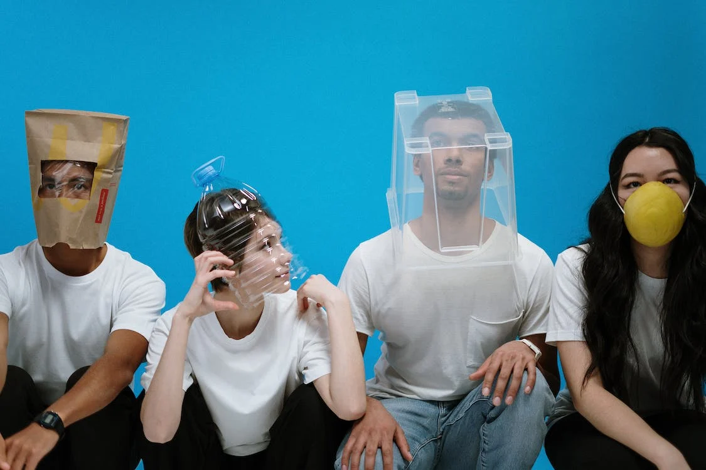

Sobre Nós
Nossa ONG surgiu a partir de discussões sobre as distintas possibilidades que envolve causas sustentáveis, pois embora saibamos que é preciso cuidar do meio ambiente e já existem projetos com esta finalidade, ainda é mínima a participação dos Brasileiros com relação a coleta seletiva e o reaproveitamento de materiais descartáveis.
